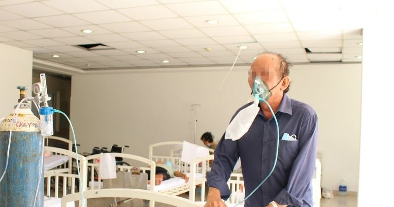

Tong hop tin tuc - 2026-04-19
Mới đây, cử tri các phường trung tâm Hà Nội đã có kiến nghị UBND TP Hà Nội nghiên cứu triển khai các biện pháp quản lý hạn chế xe cá nhân vào một số khu vực trung tâm, điều chỉnh giờ làm, giờ học, tăn
Theo Cục Quản lý và Phát triển thị trường trong nước, vừa qua Cục thành lập Đoàn đôn đốc công tác quản lý nhà nước và giám sát các thương nhân đầu mối trong thực hiện nguồn cung, dự trữ lưu thông xăng
Cục Quản lý và Phát triển thị trường trong nước (Bộ Công Thương) cho biết, trong đợt đôn đốc, giám sát việc thực hiện nguồn cung và dự trữ lưu thông xăng dầu từ ngày 11–31/3, cơ quan này đã làm việc v
Từ bao cát 1.500 năm tuổi đến Robot AI: Sự lột xác của công nghệ cầu đường Nhật Bản Quỳnh Phương | 19/04/2026 17:37 PM | Công nghệ Theo dõi Cafebiz.vn trên Giải mã bí quyết giúp Nhật Bản biến nghịch c
(PLO)- Trước biến động nguồn cung và giá nhiên liệu bay trên thế giới, Cục Hàng không Việt Nam vừa đề nghị phía Trung Quốc duy trì nguồn cung ổn định, nhằm đảm bảo hoạt động khai thác của các hãng hàn
Với cộng đồng doanh nghiệp Hoa Kỳ, yếu tố quyết định đầu tư không còn dừng ở ưu đãi hay quy mô, mà nằm ở khả năng của thể chế trong việc theo kịp các mô hình kinh doanh mới, dựa trên khoa học, dữ liệu
"Vượt rào, lách chắn" Thời gian gần đây, các vụ tai nạn giao thông đường sắt liên tiếp được ghi nhận trên cả nước. Tối 18/4, tại xã Đại Xuyên (Hà Nội), tàu SE6/927 đã tông trực diện vào một chiếc ô tô
Ngày 19/4, thông tin từ Ban QLDA Đầu tư xây dựng khu vực 1 TP. Huế cho biết, hộ dân cuối cùng tại số 55 Nguyễn Lộ Trạch (phường Vỹ Dạ) đã đồng ý bàn giao phần mặt bằng còn vướng, tạo điều kiện để nhà
Trong nỗ lực bám đuổi ngôi đầu bảng của CAHN, Thể Công Viettel quyết tâm lấy 3 điểm khi tiếp đón đối thủ HAGL. Đội hình dự kiến: Thể Công: Văn Việt, Viết Tú, Kyle Colonna, Văn Nam, Tuấn Tài, Hữu Thắng
Tôi xin nêu vài ý kiến hay nói đúng hơn là những tâm tư, chia sẻ kinh nghiệm về sự việc một nữ MC đang được dư luận cũng như giới giải trí quan tâm. Có thể xác nhận là sự việc này cũng thường xảy ra đ
Ngày 19/4, tại Trường Đại học Sư phạm TPHCM, Ban Thư ký Hội Sinh viên Việt Nam TPHCM phối hợp với Nhà Văn hóa Sinh viên TPHCM tổ chức Ngày hội Sinh viên với ngoại ngữ - English Camp 2026. Ngày hội là
Ngày 19/4, Công an tỉnh Ninh Bình thông tin, Cơ quan Cảnh sát điều tra Công an tỉnh đã ra lệnh giữ người trong trường hợp khẩn cấp, quyết định tạm giữ, lệnh bắt người bị giữ trong trường hợp khẩn cấp

Thông tin trên được đưa ra tại hội thảo khoa học “Kỷ nguyên mới trong điều trị hen nặng: Từ kiểm soát triệu chứng đến lui bệnh lâm sàng với kháng TSLP” (TSLP là liệu pháp sinh học mới trong điều trị h
Set diễn headliner của Justin Bieber có cấu trúc tương tự tuần trước, nhưng được bổ sung nhiều điểm nhấn khác. Nam ca sĩ bất ngờ mời “fan cứng” Billie Eilish lên sân khấu trong ca khúc One less lonely
Ngày 19/4, Công an TP Đà Nẵng đã bắt tạm giam Nguyễn Đức Quyền (trú xã Trung Giã, Hà Nội) về hành vi Lừa đảo chiếm đoạt tài sản. Nguyễn Đức Quyền tại cơ quan công an. Ảnh: Bảo Nam Theo điều tra, đầu n
TAM NGUYÊN (tổng hợp)